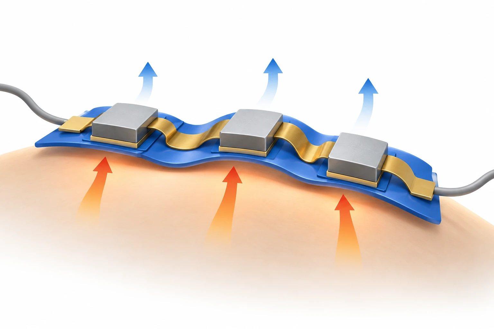

Overview
This review, written by the BLISS Lab (Jungmok Seo) at Yonsei University, examines wearable thermoelectric devices (w-TEDs) as body-integrated systems whose output depends on skin contact, mechanical compliance, electrical interfaces and heat-flow design as well as on thermoelectric materials. Comparing representative devices with normalized metrics, it notes generators reaching up to 25.34 μW cm−2 K−2 and coolers approaching 20 K of temperature modulation under controlled conditions, and proposes about 1 μW cm−2 K−2 and about 10 K as targets to be retained during site-relevant deformation.
Background
Thermoelectric devices pump heat electrically through the Peltier effect and generate power from a temperature difference through the Seebeck effect, which makes them candidates for personal thermal management and body-heat harvesting. Conventional modules are rigid, however, and leave interfacial gaps or delaminate on curved, moving skin. Early wearable designs encapsulated rigid π-shaped modules in elastomers, which did not accommodate large deformation. Strategies that add compliance can in turn raise electrical resistance and create parasitic heat paths, so wearability and performance need to be considered together.
How the review is organized
The review first derives the device-level relations for open-circuit voltage, maximum power, the figure of merit zT and the coefficient of performance (COP), emphasizing that the temperature difference across the legs is smaller than the body–ambient difference. It then groups wearability strategies into geometry modification, stretchable interconnects and deformable thermoelectric elements (inorganic thin films and 3D networks, and organic materials such as PEDOT:PSS and carbon nanotubes). A thermal resistance network splits the available temperature difference among skin, skin–device interface, device and heat sink, and is used to organize performance strategies: external heat sinks, internal thermal pathway design and reduction of electrical contact resistance.

AI-generated concept: the review links curved-surface contact, deformable electrical connections and heat transport in wearable thermoelectrics. Arrows represent conceptual heat flow, not measured body-heat power or cooling performance.
Generated for this library to illustrate the design; it is not a figure from the paper and does not show measured data.
Scope of the review
The review covers inorganic thermoelectric (ITE) and organic thermoelectric (OTE) devices for power generation, active cooling and heating, sensing, wound healing, thermal camouflage and fire warning. Table 1 lists printed and film formats of ITE materials with voltage, power, temperature difference and pair number; Table 2 compares Seebeck coefficient, conductivity and power factor of OTE and ITE materials; Table 3 lists comfort, biosafety and long-term reliability indicators with relevant ISO and IEC standards (for example ISO 9237, ISO 10993-5 and ISO 6330); and Table 4 compares representative devices by normalized power density (P_norm), normalized voltage (V_norm), thermal regulation, deformation and test environment.
Main points of the review
Wearability strategies: geometry modification keeps high-performance rigid legs while letting the structure deform. In a cited pop-up kirigami device on a 100 °C cylindrical source, open-circuit voltage changed from 144 mV to 143 mV and maximum power from 12.4 mW to 11.1 mW at 40% strain. Stretchable liquid-metal interconnects need fillers to stabilize the leg array, but PDMS conducts heat about 6–8 times better than air (0.16 versus 0.024 W m−1 K−1); a hollow microsphere filler with 12% infill raised open-circuit voltage by 27% over a fully infilled elastomer. Thin-film ITE devices integrate well but carry heat mainly in-plane, while the out-of-plane flow from skin favors vertically aligned or 3D architectures. OTE materials suit textiles and porous multimodal sensors but have lower power factor, and n-type OTE materials lag p-type.
Performance strategies: soft heat sinks raise heat-sink thermal resistance, and phase-change materials absorb heat only temporarily; in a cited case, a 28 °C phase-change heat sink lowered device temperature by 13.4 °C at 400 mA. Placing thermally conductive encapsulation only over the active legs increased maximum open-circuit voltage by 64% and maximum power density by 171% relative to full encapsulation. Leg length and fill factor show optima because longer legs raise thermal resistance but also electrical resistance. Diffusion barriers, graded conductive adhesives and pressure-assisted contacts lower contact resistance, but most studies address rigid legs rather than deformable thermoelectric materials.
Applications and practical constraints: a cited PID-controlled cooling headband held the forehead at 32 °C ± 0.25 K over ambient temperatures of 20–42 °C, but power supply remains the main barrier; a VR/AR thermal-feedback device ran about 1.9–2 h on a 3.7 V, 600 mAh battery. A body-heat generator produced about 89 mV at a temperature difference of 2 K, above the 30.2 mV needed to start its energy-management circuit, and powered wireless sensing. The review argues that thermoelectric performance alone does not define practical wearability and lists indicators for air and vapor permeability, skin adhesion, cytotoxicity, material leaching, encapsulation integrity, sweat and washing stability and prolonged on-body operation.
Design framework: Figure 16 orders design choices by operating mode (generator or cooler), body site and its deformation, wearability strategy, and device-level loss reduction. Inorganic legs on flexible circuit boards suffice for modest deformation, stretchable substrates and interconnects are needed as deformation grows, and intrinsically deformable materials become advantageous when structure alone cannot accommodate strain. Because Table 4 values come from different functions and boundary conditions, the authors treat it as a map of performance ranges and trade-offs rather than a ranking.
Open questions
The authors identify the trade-off between thermoelectric performance and mechanical compliance as the persistent challenge, together with integrating leg arrays, stretchable interconnects, thermal management and packaging into thin devices; most w-TEDs remain at laboratory scale. They call for evaluation under combined motion, sweat, humidity, variable skin contact and long-term wear, biosafety testing after aging, stricter validation for wound use, and scalable manufacturing of large-area devices.
Related research
Modular assembly of self-healing flexible thermoelectric devices with integrated cooling and heating capabilities
DOI: 10.1038/s41467-025-59602-8 ↗
The abstract describes selectively encapsulated liquid-metal electrodes and self-healing module assembly. It provides a concrete example of contact and heat-transfer design.
Abstract-based introductionSources used in this summary
This summary is based on the full text, Tables 1–4 and figure legends of the open-access review (PMC13618461). Device values are reported as summarized in the review; the cited primary studies were not consulted.